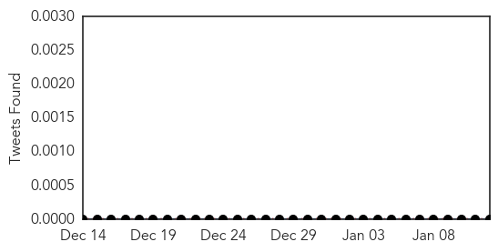
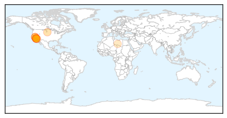
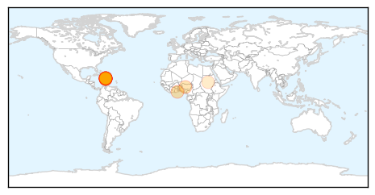

Measles
30-Day Web Trend
4 alerts, 3 warnings

30-Day Twitter Trend
0 alerts, 0 warnings

Article Locations
Article Confidences

Top Articles:
- 0.992
- Long Beach measles case linked to Disney outbreak
- 0.966
- New measles case brings South Dakota outbreak to 13
- 0.966
- 22 California measles cases linked to Disneyland outbreak
- 0.922
- SAN BERNARDINO COUNTY: 2 more measles cases linked to Disneyland
- 0.890
- Disney measles outbreak reaches twenty patients in California, Utah, Colorado, and Washington.
- 0.885
- Family Activities In Omaha, Tips And Tricks For Local Parents
- 0.861
- Disney measles cases now stand at 26
- 0.839
- Measles: Disneyland case traveled through Sea-Tac Airport to Puget Sound
- 0.789
- Three more SoCal measles case linked to Disneyland outbreak; total now nearly two dozen
- 0.761
- Woman with measles traveled through Sea-Tac Airport, Puget Sound
- 0.720
- Measles in Disneyland: Happiest Place on Earth Hit by Anti-Vaxxers
- 0.597
- New Flu Shot Rules in New York City May Fan Debate Elsewhere, Including Calif.
Top Tweets:
-
No tweets found for Jan 12, 2015
Cholera
30-Day Web Trend
2 alerts, 0 warnings

30-Day Twitter Trend
0 alerts, 0 warnings

Article Locations
Article Confidences

Top Articles:
- 0.998
- Online News and Information Portal for Ghanaians In Diaspora
- 0.988
- Haiti fights cholera epidemic five years after quake
- 0.967
- Five years after Haiti quake, a new setback for cholera victims
- 0.965
- U.S. judge rules Haitians cannot sue U.N. for cholera epidemic
- 0.948
- Five Years After Quake, Committed to Improving Health in Haiti - Haiti
- 0.893
- WaterAid Launches New Initiative to Help West African Communities Cope with Drought
- 0.884
- Five Years After Devastating Haiti Earthquake, Protesters Want President Martelly to Resign
- 0.851
- 5 Years After Haiti's Earthquake, Where Did The $13.5 Billion Go?
- 0.848
- 5 Years After Haiti's Earthquake, Where Did The $13.5 Billion Go?
- 0.833
- 5 Years After Haiti's Earthquake, Where Did The $13.5 Billion Go?
- 0.802
- Haiti Earthquake Fast Facts
- 0.720
- Five Years After Earthquake, Politcal Ground Still Shaking in Haiti
- 0.720
- Haiti five years on - Haiti
- 0.672
- The Portland Press Herald / Maine Sunday Telegram
- 0.635
- More Than 85,000 Haitians Are Still Homeless From The 2010 Earthquake
- 0.621
- Haiti — surviving the earthquake, and moving on
- 0.564
- Haiti: Promised rebuilding unrealised; authoritarian rule challenged
- 0.530
- 5 Years Later, Haiti Is Embracing Its Potential
- 0.525
- U.N. immune from accountability for cholera in Haiti, says U.S. court
- 0.515
- Volunteer Network Helps Haiti Cope With Disasters Year After Year
- 0.513
- Haiti's promised rebuilding unrealized as Haitians challenge authoritarian rule
Top Tweets:
- 0.513
- Haiti's twofold tragedy: earthquake and cholera – in pictures http://t.co/QZ5s5fPDRp